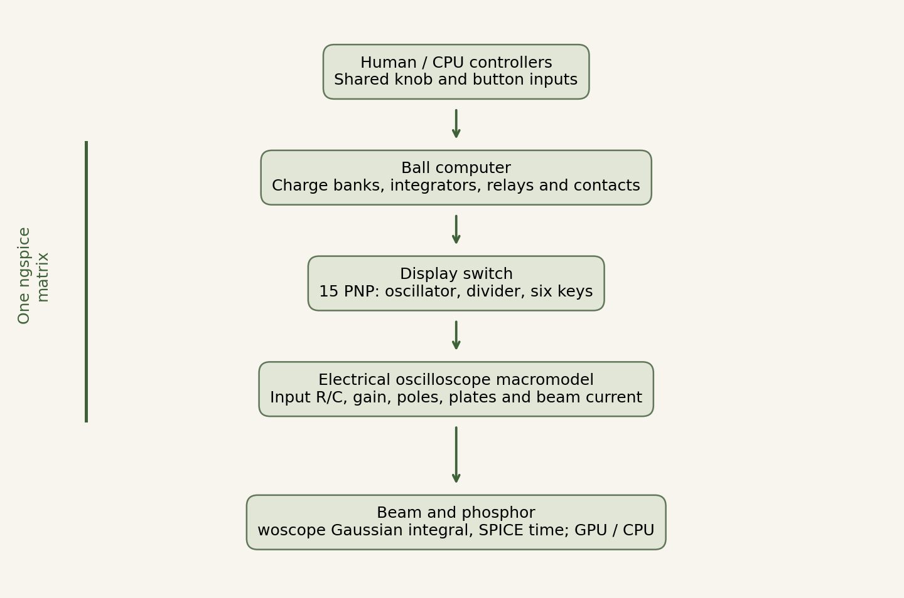
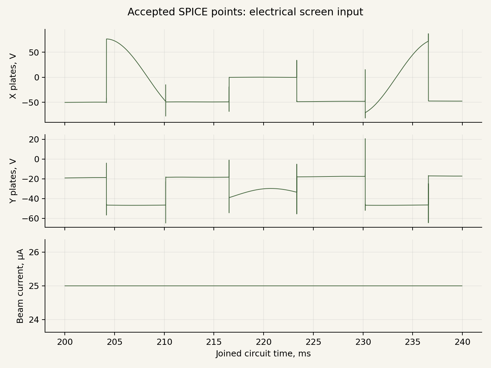
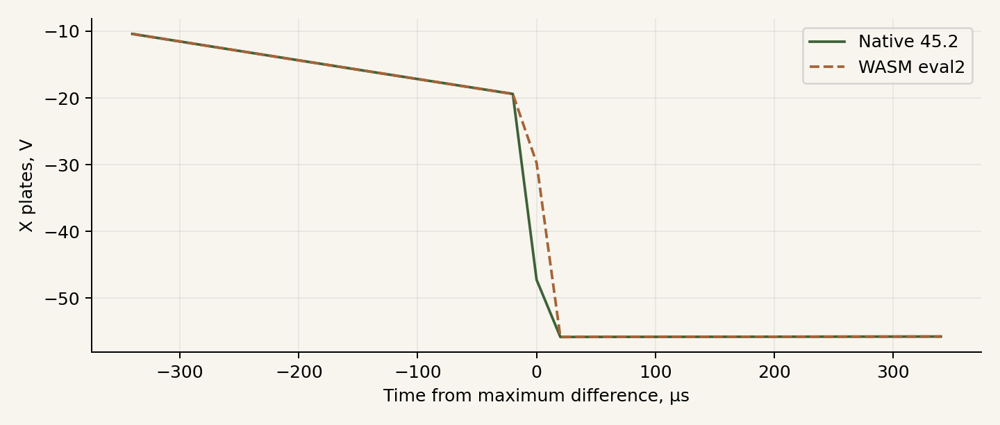
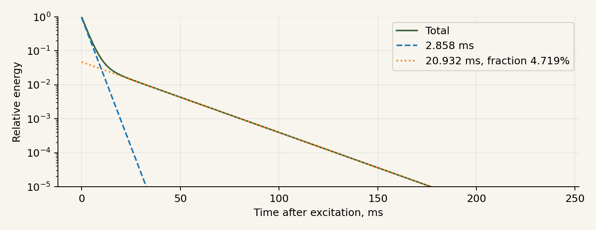

Tennis for Two: reconstructing an electrical instrument
Research and engineering report. Version 0.8.4, 25 October 2026.
Project author: Dmitry Malykhin, Gremlin. Research and development in dialogue with ChatGPT (OpenAI). External authors are credited in the provenance register. Our code and explanatory writing are released under MIT.
1. The result
The working browser instrument joins the ball computer, transistor display switch and electrical oscilloscope macromodel in one ngspice/WASM transient analysis. Every circuit element shares the same physical time. The electrical model determines ball position, bounces and interlocks. The screen receives deflection-voltage and beam-current traces.
The reconstruction follows surviving documentation, with declared equivalents where component details are unavailable. Its acceptance criteria are documented connections, justified substitutions and a checked numerical calculation. The lost original is not a prerequisite for completing this reconstruction.
| Evidence | What it establishes |
|---|---|
| Historical sources | Accounts, surviving schematics and manufacturer documentation |
| Electrical model | Implemented connections, selected equivalents and explicit parameters |
| Numerical checks | Convergence, solver comparisons, state continuity and repeatability |
Numerical differences describe the chosen model and test scenarios. Component assumptions and historical interpretation are recorded separately.
The optional Demo mode additionally replays a lossless thirty-second circuit/operator/control recording at 1.00x real time. Its screen and glass remain calculated in the browser. Demo is off by default; the three game modes retain live electrical simulation. The recording and timing checks are documented in the Demo appendix.
2. Historical basis
Tennis for Two was shown to Brookhaven visitors on 18 October 1958. William Higinbotham and Robert Dvorak used an analog computer, two handheld controllers and an oscilloscope. The display showed a side view of the court, net and ball. A knob selected the shot direction; a button hit the ball from its current position. Source: BNL [H1].
The published computer drawing EH 1-900-1-3 A is dated 15 October 1958 [H2]. The display-switch drawing EH 1-900-2-3 A is dated 18 November 1959 [H3]. We retain both dates: the joined model reconstructs the documented instrument principle rather than asserting an exact component inventory for the October 1958 demonstration.
Raiford Guins describes assembly corrections that were not entered into the surviving drawing [H7]. We therefore record interpretations explicitly when the drawing leaves a conflict.
Peter Takacs and the hardware restorations
Takacs’s team recreated the game for the laboratory anniversary in 1997. BNL’s account of the 2008 demonstration names Peter Takacs, Gene Von Achen, Paul O’Connor and Scott Coburn. Mechanical relays and germanium transistors were used with a modern analog replacement for the computer [H4].
In his 2010 account, Takacs describes semiconductor damage from relay-switching transients and preparations to connect a restored Donner Model 3400 [H5]. This is relevant hardware experience; Model 3400 is kept distinct from the original Model 30.
BNL’s explanation quotes Takacs’s 36 Hz display-switching figure [H1]. Treating it as the full cycle of our three-channel network is an interpretation; the publication supplies no phase-resolved electrical traces.
3. What other projects contributed
Angel De La Cruz and John Ryan’s MIT 6.101 project of 2016 demonstrates a working modern analog architecture, using its own components, generators and voltage scales [H6]. Its values are not presented here as 1958 component specifications.
MEGA/T42 provides hardware and functional comparisons [H8]. TeTS is an independent software interpretation whose author describes a selected drag law and display-trail model [H9]. We found no primary support for describing it as an official BNL simulator with millimetre accuracy.
The existing woscope algorithm [S3, S4] supplies an analytical Gaussian-beam integral; its authors and MIT license are preserved. MAME/BGFX [S5] informed the separation of phosphor excitation, decay, HDR accumulation and presentation. We make no claim of worldwide priority.
4. The ball computer
Four 1 µF charge banks charge through 50 kΩ. Contacts switch these banks into the velocity amplifiers’ feedback paths. Networks of 1 MΩ and 1 µF integrate the outputs. Feedback also includes 10 MΩ in parallel with 0.01 µF. U7 represents X; U2 is the vertical coordinate relative to the top of the net.
Holding capacitors of 10 µF and 5 µF are reconnected at ground and net collisions. A bounce follows from changed connections and charge redistribution. The game JavaScript contains no separate projectile integrator or velocity-restitution multiplier.
Declared equivalents
The amplifier has finite gain, a dominant pole, rail saturation and output resistance. The relay has an R–L coil, rectification and protection paths, hysteretic thresholds and an RC equivalent for armature motion. Contacts use finite conductance and smooth transitions. Interlocks use electrical state and behavioral sources.
| Parameter | Working setting | Basis |
|---|---|---|
| Integrator network | 1 MΩ / 1 µF | Surviving drawing |
| Bank charging | 50 kΩ / 1 µF | Surviving drawing |
| Ground / net holding capacitors | 10 µF / 5 µF | Surviving drawing |
| −G voltage | −60 V | Reconstruction setting |
| Net height / X limits | 20 V / ±75 V | Selected scale |
| Serve position | X = ±62 V | Calibration |
| Amplifier | A0 = 10000, 1 Hz pole, 100 Ω output | Macromodel |
| Relay coil | 10 kΩ, 10 H, 50 µA threshold | Engineering equivalent |
| Closed contact | Approximately 50 Ω | Engineering equivalent |
The full parameter set, control laws and C01–C07 substitution register are in model.json, corrections.json and tennis.cir. The executable netlist defines the connections; JSON indexes them.
5. The transistor display switch
The switch has 15 PNP transistors: two in the oscillator, two in the bistable divider, five drivers and six analog keys. It selects the ball, net and court channels electrically, without a programmed phase schedule.
Two 1 kΩ resistors form a load with a differentiated-pulse tap. The network includes 20 kΩ, 0.5 µF, 510 Ω, 10 kΩ in parallel with 1 nF, and 51 kΩ / 1 kΩ input dividers. Detailed connections are in display-switch.cir and display-model.json.
The preliminary Ge PNP model uses BF = 75, leakage and reverse gain, series resistances, capacitances and transit times. RCA SC-11 supports identification of the 2N140 and one small-signal operating point [H10]; the remaining switching parameters are selected model values. Reverse operation and breakdown are not identified from the original parts.
The separate bench produces approximately 39.09 Hz per full cycle. The historical 36 Hz figure is shown for comparison; capacitors were not silently retuned to force that value.
In the game, the transformer, bridge, divider and four filter capacitors are calculated with the load. Net and court signals have separate AC branches and finite potentiometer resistance. Supply phase survives continuation. Transformer parameters, offsets and regulator settings are listed as calibration choices.
6. One transient analysis
U2/U7 connect directly to the keys. Display loading participates in the common electrical calculation. The switch feeds the oscilloscope inputs. Computer, switch, supply and oscilloscope are solved by one ngspice matrix with one clock; the renderer consumes the resulting beam trace.
The separate diagnostic bench holds the ball input fixed to measure frequency, transfer and isolation. The playable model continuously updates the switch input through the ball computer.
The maximum internal step is 50 µs, using second-order Gear, reltol = 10⁻⁴, abstol = 10⁻⁹ A and vntol = 10⁻⁶ V. Controller state is exchanged every 5 ms of simulated time. Beam traces retain actual accepted adaptive points.
Trace extraction and memory
Dense resumed output exposed distortion with ngspice 45.2’s interp mode. The joined live session disables it at load time. The display keeps accepted points and their timestamps. Post-analysis linearization appears only in explicitly identified comparison benches.
Checkpoints transfer node voltages, capacitor states and coil currents into the next analysis segment. Algebraic amplifier guesses are also retained for a stable restart. Gear history restarts, so boundary error is measured against uninterrupted analysis. External sine sources include the accumulated time offset.
Long runs revealed increasing allocated WASM memory after repeated circuit loads. In 0.8.4 a fresh Worker validates the saved electrical state before the live one is released. Handoff is requested at safe half-second boundaries or above the selected heap threshold. An initial-point rejection keeps the original solver running and defers another attempt by 50 ms. The continuation appendix documents the public failure and regression checks. An active button pulse finishes before transfer. The saved point is first established with the old inputs over 1 µs, then the waiting controller command is applied. There is no repeated 0.25 s startup or new serve.
7. Electrical oscilloscope model
Published DuMont 5ADP-family and 304-A specifications provide the scale [D1, D2]. Deflection is electrostatic; magnetic deflection coils are not introduced.
| Quantity | Value | Basis |
|---|---|---|
| X input | 2.2 MΩ in parallel with 50 pF | 304-A nominal specification |
| Y input | 2 MΩ in parallel with 50 pF | 304-A nominal specification |
| Accelerating-voltage reference | 1.6 kV | Selected operating reference |
| X / Y sensitivity | 48 / 36.8 V per inch | 5ADP-family scale at that reference |
| Macromodel bandwidth | Two poles at 300 kHz | Our implementation of the published response limit |
| X / Y gain | 54 / 44 | Scale calibration |
| Plate offset and limits | Explicit, ±110 V | Calibration |
| Beam current | Nominally 25 µA | Selected setting |
Two cascaded poles give magnitude 0.9 at 100 kHz and 0.5 at 300 kHz. Input R/C loads the switch in the common circuit. The tube stages, high-voltage supply, cathode heating and aging are represented at macromodel level.
8. Beam and phosphor
The renderer receives only time, X/Y plate voltages and beam current. It does not identify ball, net or court objects. Pause, hints and diagnostics stay on the external panel.
woscope integrates a Gaussian spot along a short movement segment. Longer dwell deposits more energy. Our adaptation uses a normalized two-dimensional spot and a segment charge proportional to current and duration. woscope’s erf approximation traces back to Evan Wallace’s published CC 0 code [S6]; this attribution is preserved.
Two linear accumulation-and-decay components describe the phosphor. Each stores energy and decays as exp(−Δt/τ); presentation follows accumulation. A generic RCA P1 removal curve from 1951 is the reference. Ten graphically read points were fitted with 2.858 and 20.932 ms time constants. Assuming linear steady excitation, these correspond to a 4.719% slow impulse-deposition fraction. The graph’s excitation history is unknown; this is a declared interpretation of generic P1. Spot width, halo and photometric scale are calibration parameters.
WebGL2 stores energy in RGBA32F and checks EXT_color_buffer_float and EXT_float_blend against Khronos specifications [S7]. CPU fallback uses the same integral and clock, with a smaller buffer to reduce presentation cost. Re-presenting a paused frame adds no energy. On context loss, CPU rendering replays one second of recent beam history, covering more than 47 slow time constants.
9. CPU operators
The three modes are Me and Opponent, Me and Fox, and Gremlin vs Fox. Automatic operators use the same knobs and buttons as people. They observe delayed ball positions and permission lamps. Velocity is estimated from observation history; future trajectories and instantaneous internal solver velocities are not exposed to the decision logic.
Brenner and colleagues distinguish position corrections from responses to changed motion [C1, C2]. Van Zon and colleagues model rotary-control movement duration with Fitts’s law [C3]. Firoiu and colleagues study action delay in game agents [C4]. These support the model structure.
Our profile uses 200–300 ms delays, a maximum knob speed of 0.60 ranges per second and movement duration depending on distance and accuracy. They are open game parameters. CPU as a controller operator: evidence and implementation gives the studies, numerical examples and transfer assumptions. Human gameplay comparison remains a separate validation task.
10. Numerical-engine work
ngspice is an external solver with its own authors. Version 0.5.1 reduced repeated visits to shared subexpressions and unnecessary Asyncify wrappers for known synchronous functions. Version 0.5.2 prepares expression and derivative trees as operation sequences. Values are reused only inside one IFeval call; Newton iterations and time steps recompute them. Selected conditional branches are preserved. Stateful or unknown functions fall back to the original evaluator. Plans are released with their trees.
Five builds compared O2, O3, LTO, the prepared evaluator and combinations. O3 with the prepared evaluator and without LTO was selected. On the same historical joined bench, representing 0.4 s of model time:
| Environment and condition | Before | 0.5.2 | Time reduction |
|---|---|---|---|
| Node/WASM, median of three runs | 6.607 s | 5.319 s | 19.5% |
| Chrome/Linux, fresh Worker per run | 6.528 s | 5.499 s | 15.8% |
All 69 signals in that bench matched. The evaluator passed 100401 bitwise comparisons and nine SPICE scenarios. These measurements belong to that model and environment, not the current game’s FPS or M1 performance. An initial browser batch running multiple modules in one Worker had anomalous timings; those results are retained and their cause is unresolved.
Generated expression functions, SIMD and GPU circuit solving are proposals, not features in this release.
11. Checks and interpretation
Checks cover the ball computer, separate switch, CPU operators and joined circuit. State-transfer tests compare voltage and edge timing; renderer tests compare the beam integral and energy accumulation. Reports retain conditions, original criteria and failed cases.
WebGL2 is unavailable in the test cloud Chrome. CPU fallback starts successfully; GPU checks are skipped. This version has not been benchmarked on the target Mac M1 / Firefox.
Electrical validation of profile 0.7.0
Release 0.8.4 retains the checked 0.7.0 circuit equations. Measurements below belong to the stated Linux/Node/WASM scenarios.
| Check | Measurement | Scope |
|---|---|---|
| Joined circuit | 7 / 7 | Wiring, accepted beam, state transfer, screen and CPU |
| Coordinate transfer | 124.081 µV | Maximum on the control trajectory |
| Normal checkpoints | 2.667 µs | Maximum edge shift in the declared window |
| Frequent checkpoints | 1.396 µs | Maximum edge shift in the declared window |
| Cold-start coordinates | 0.405 mV | Entire 0.4 s window, including startup |
| Cold-start matching edges | 13660.128 µs | 20 µs post-analysis grid; original maxima retained |
| Cold-start settled maximum | 76.363 V | Explicit ±150 µs edge exclusions |
| Cold-start raw maximum | 76.363 V | Original pointwise 20 mV criterion failed |
| Forced Worker transfer | 0.040 s / — hits | 8 transfers; peak WASM 83.06 MiB |
| Production Worker | 12.002 s / 9 hits | 24 transfers; peak WASM 119.62 MiB |
| Common initial state: coordinates | 0.208 mV | Native/WASM continue one accepted point after 0.25 s |
| Common state: edges / settled | 19.985 µs / 3.327 mV | Reported separately from cold startup |
Interpretation
At cold start, the bistable can choose a different initial B/C order. Same-labelled signals then differ outside edges too. The failed cold-start comparison remains in the report. A separate shared-initial-state experiment checks numerical continuation of the same accepted state. Its original pointwise 20 mV edge criterion also fails; timing and settled-voltage criteria are reported separately.
The initial 25 µs / 10⁻⁶ profile increased direct-session memory and exposed a fresh-Worker continuation error. The production restore first establishes saved UIC state over 1 µs with the previous inputs, then applies the next controller command. No startup or serve is repeated. Original failed logs are retained.
E1 contains 40 completed transients, two convergence failures, one timeout and two completed AC cases. These are research variants, separate from production checks.
M1/Firefox speed and hardware WebGL are unmeasured. CPU fallback is available. Machine reports: joint-validation.json, worker-validation.json, joint-phase-validation.json, joint-native-validation.json, joint-native-warm-validation.json.
12. Research materials
The game page provides the report and source archive. Executable circuits, parameters, dependency source, solver changes, tests and logs support reproduction of the results. Reproduction instructions accompany the source.
Our code and writing use MIT. External components retain their licenses and credits. The report includes the complete provenance register.
13. Adopted reconstruction choices
The working release uses primary schematics, published specifications and declared equivalents. The passive supply and loaded line sources participate in the common simulation. Relay contacts, Donner amplifiers and tube oscilloscope stages use documented macromodels.
The 1957 Donner Model 3000 handbook supplies an internal tube schematic and response information. Its identity with Model 30 is not established. Takacs used modern op-amps and later restored a Model 3400; these models are kept distinct.
The playable amplifier remains the checked finite macromodel. Wider-band and current-limited candidates produced convergence or checkpoint-continuation errors and were rejected for this release. The experimental observations are recorded separately from successful production checks.
Research sources
- [H1] BNL, The First Video Game?: https://www.bnl.gov/about/history/firstvideo.php
- [H2] Tennis Programming, 1958: https://www.bnl.gov/about/docs/videogameschematic1.jpg

- [H3] Electronic Switch, 1959: https://www.bnl.gov/about/docs/videogameschematic2.jpg

- [H4] Diane Greenberg, BNL, 03.11.2008: https://www.bnl.gov/newsroom/news.php?a=2964
- [H5] Peter Takacs, 14.12.2010: https://scienceblogs.com/brookhaven/2010/12/14/resurrecting-one-of-the-worlds
- [H6] Angel De La Cruz, John Ryan, MIT 6.101, 2016: https://web.mit.edu/6.101/www/s2016/projects/angeld19_Project_Final_Report.pdf
- [H7] Raiford Guins, The Strong, 13.01.2017: https://www.museumofplay.org/blog/following-the-bouncing-ball-tennis-for-two-at-the-strong/
- [H9] RetroAnalyst, TeTS, 04.08.2021: https://www.retrogamedeconstructionzone.com/2021/08/the-tennis-for-two-simulator-tets.html
- [H10] RCA Transistor Manual SC-11, 1964, p.131: https://manuals.plus/m/db7d541ddf75928e77eb98d8259325b533a3e448761ab34769aa85c3f69a86b6.pdf
- [D1] DuMont Oscillographer, 14(1), 1953: https://www.oscilloscopemuseum.org/uploads/8/9/7/7/89778727/dumont_-_oscillographer_-_vol._14_no._1.pdf
- [D2] DuMont 304-A Operating and Maintenance Manual: https://www.opweb.de/en/manufacturer/dumont-oscilloscope-laboratories-inc/304a
- [S1] ngspice: https://ngspice.sourceforge.io/ ; license inventory:
../vendor/COPYING.
- [S2] EElab.dev, EEcircuit-engine: https://github.com/eelab-dev/EEcircuit-engine
- [S3] Igor Null, Chad von Nau, woscope: https://github.com/m1el/woscope
- [S4] Igor Null, How to draw oscilloscope lines with math and WebGL, 17.09.2015: https://m1el.github.io/woscope-how/
- [S5] MAME, BGFX vector CRT renderer: https://docs.mamedev.org/techspecs/bgfx_vector_crt.html
- [S6] Evan Wallace, Fast Rounded Rectangle Shadows, CC 0: https://madebyevan.com/shaders/fast-rounded-rectangle-shadows/
- [S7] Khronos: https://registry.khronos.org/webgl/extensions/EXT_color_buffer_float/ ; https://registry.khronos.org/webgl/extensions/EXT_float_blend/
- [C1] Brenner, Smeets, de Lussanet, 1998: https://doi.org/10.1007/s002210050535
- [C2] Brenner, Bom, Smeets, 2026: https://doi.org/10.1007/s00221-026-07264-3
- [C3] van Zon, Borst, Pool, van Paassen, 2019/2020: https://doi.org/10.1177/0018720819862146
- [C4] Firoiu, Ju, Tenenbaum, 2018: https://arxiv.org/abs/1810.07286
Additional primary documents
- [B3] William Higinbotham, 1976 technical account, BNL archive: https://www.bnl.gov/about/docs/higinbotham_deposition.pdf
- [G1] RCA Semiconductor Products, 1960: https://n4trb.com/AmateurRadio/SemiconductorHistory/RCA_Semiconductor_Products_1960.pdf
- [G2] RCA Transistor Manual SC-12, 1966, printed p. 122: https://ftpmirror.your.org/pub/misc/bitsavers/components/rca/1966_SC-12_RCA_Transistor_Manual.pdf
- [G3] Taitron 1N100 datasheet, modern: https://www.taitroncomponents.com/catalog/Datasheet/1N100.pdf
- [A1] Dana Peckworth, Resolution of complex decay curves by analog computer techniques, 1959, printed pp. 4–5, 37: https://archive.org/download/resolutionofcomp00peck/resolutionofcomp00peck.pdf
- [E1-C1] DuMont 5ADP1 manufacturer data: https://frank.pocnet.net/sheets/041/5/5ADP1.pdf
- [E1-C2] RCA 5ADP1 manufacturer data, curves 92CM-9099, 7910, 6820R1: https://frank.pocnet.net/sheets/049/5/5ADP1.pdf
- [E1-C3] RCA HB-3 Picture Tube Guide, P1 curve 92CM-5380R2, 1951-02-01, PDF p. 31: https://frank.pocnet.net/sheets/049/suppinfo/rca_hb3_pic.pdf
- [A2] Donner Scientific, Operating Handbook Model 3000, October 1957, printed pp. 1–2, 5–7, 25–26, schematic E25: https://www.analogmuseum.org/library/donner_3000.PDF
- [A3] Irvin H. Swift, Computing amplifier, US 2581456 A, published 1952-01-08: https://patents.google.com/patent/US2581456A/en
Schematics and signals






Provenance, authors and reuse
Version 0.8.4. Inventory checked on 25 October 2026.
Our code, circuit descriptions and explanatory writing use MIT. External source retains its original licenses. The project’s MIT license does not relicense ngspice, manufacturer documents, archival drawings or papers.
ReportLab (BSD), Matplotlib (PSF-based license), Pillow (HPND) and DejaVu Fonts produce the report and figures; their code is not part of the browser runtime. DejaVu text fonts are embedded in the PDF. The notice is retained in DejaVu-Fonts-LICENSE.txt.
Planck.js / Box2D: controller mechanics
Planck.js 1.5.0 calculates the revolute and prismatic joints in the controllers. Authors: Erin Catto and Ali Shakiba; MIT license. The original engine module, source package and license text are retained. The Planck.js provenance record identifies the version, file origins and SHA-256 hashes. See Controller mechanics for the historical comparison and Mechanical engine choice for the alternative-engine review. Rapier, Box2D-WASM and Matter.js were reviewed through documentation; their code is not included.
Faceplate optics
Independent MIT implementation of Snell/Fresnel equations, attenuation and a bounded internal reflection. References: DuMont 5ADP manufacturer data; A. E. Martin and R. M. Bowie, Sylvania, Electronics August 1950; Pharr, Jakob and Humphreys, Physically Based Rendering 4e; Michael Deering US5446834A. These are credited mathematical and historical references. Their source code is not incorporated. Chosen glass and room parameters are documented in Screen glass optics.
Reconstruction components
| Component | Purpose |
|---|---|
tennis.cir | Charge banks, integrators, switched bounce capacitors, relay/amplifier equivalents |
display-switch.cir | 15-PNP oscillator, divider, drivers and six keys |
instrument-model.js | Archival passive-supply topology, loaded line controls and calibration |
joint-circuit.js | Direct connection of U2/U7, keys and oscilloscope inputs |
| ngspice 45.2-tft-eval2 | WASM numerical solver with recorded source and changes |
SpiceSession, TennisCircuit | Command session, controller inputs, events and electrical state |
CPUPlayer | Delayed observation, bounded knob movement and the ordinary button |
| Beam and phosphor | Electrical-trace presentation with energy accumulation and decay |
| Numerical checks | Joined circuit, individual networks and state transfer |
Checkpoints include computer, switch, supply and scope states. External sine sources retain their phase through the accumulated time offset. The image comes from the electrical beam trace.
Included code and tools
ngspice and its contributors
- Source: https://ngspice.sourceforge.io/
- Version 45.2 with our cumulative
ngspice45.2-tft-eval2.patch.
- Supplies the numerical core, device models, transient analysis, matrix and solver.
- Principal license: Modified BSD; individual parts are listed in
../vendor/COPYING.
- Complete source and build records are included. Changes to existing files are considered with those files’ original licenses.
- Current WASM SHA-256:
7e92084ce97153e5288919cfcd64a2255dad37a7e5d9abf2d1350f09df667a5c.
EElab.dev / EEcircuit-engine
- Interface basis: npm 1.8.0, commit
f4dab6458d3865a1db9766008480690d23410c3a.
- Wrapper license: MIT, Copyright 2024 EElab.dev.
- Used: ngspice command interface, Emscripten/Asyncify wrapper and original build structure. The high-level schematic editor and device libraries are not included.
- License, original build archive, hashes and our changes are retained.
Emscripten, LLVM/Clang and Binaryen
- Compile the numerical core to WebAssembly.
- Recorded toolchain: Emscripten 3.1.6, LLVM/Clang 15.0.7 and Binaryen 108 from the documented Ubuntu snapshot.
- Exact packages and hashes:
../vendor/source/toolchain-record.json.
- Notices:
../vendor/Emscripten-COPYRIGHT.txtand source archives.
woscope — Igor Null and Chad von Nau
- Source: https://github.com/m1el/woscope
- Commit:
74af1e3f3c1ff9e0da8e82bf01b5b2dd52f3da5d.
- MIT, Copyright 2015 Igor Null and Chad von Nau.
- Used: analytical integration of a Gaussian spot along a segment and its shader bounding quadrilateral. Original files:
shaders/fsLine.glsl,shaders/vsLine.glsl.
- Adaptation:
../beam-model.js,../phosphor-webgl.js,../phosphor-cpu.js.
- Added: area normalization, beam current, irregular SPICE timestamps, physical deflection scale, HDR accumulation and two declared decay components.
- The audio-buffer/uniform-sampling dependency was removed. Audio loading, the woscope UI and recording were not copied.
- Original files, MIT license, commit and SHA-256 are in
../vendor/woscope/.
- Author’s explanation: https://m1el.github.io/woscope-how/ . It credits Evan Wallace’s erf approximation. The CC 0 original is https://madebyevan.com/shaders/fast-rounded-rectangle-shadows/ . We preserve this attribution chain.
Ideas and engineering references
MAME / BGFX vector CRT
- Documentation: https://docs.mamedev.org/techspecs/bgfx_vector_crt.html
- Studied:
vectorrenderer.cpp,chains/vector-crtshaders, commitb7c0bfd16c9b8fe451c7e3d9cf7642c857642c44.
- Shader author credit: Hans Andersson, BSD-3-Clause.
- Informed linear HDR accumulation, separate decay, emulation-time control and final brightness presentation.
- MAME source was not copied into the runtime. The beam integral comes from woscope.
- MAME approximates vector-list scan timing. Our renderer receives SPICE timestamps directly, so it does not distribute scan time by line length.
William Higinbotham, Robert Dvorak and Brookhaven
- History and archive: https://www.bnl.gov/about/history/firstvideo.php
- Computer basis: Tennis Programming, EH 1-900-1-3 A, 15 October 1958.
- Switch basis: Electronic Switch for Tennis Programming, EH 1-900-2-3 A, 18 November 1959.
- Used: connections, published component values and the creator’s account.
corrections.jsonseparates sources from our substitutions.
- The drawings retain their different dates and BNL provenance. Their images are not covered by our MIT license.
Peter Takacs and the restoration team
- Peter Takacs, Gene Von Achen, Paul O’Connor and Scott Coburn.
- BNL, 3 November 2008: https://www.bnl.gov/newsroom/news.php?a=2964
- Takacs’s account, 14 December 2010: https://scienceblogs.com/brookhaven/2010/12/14/resurrecting-one-of-the-worlds
- Considered the 1997/2008 semiconductor-computer replacement and subsequent restoration of Donner Model 3400.
- Relay-switching transients motivated amplifier testing; the account does not specify our protection or macromodel coefficients.
- The 36 Hz reference comes from Takacs’s BNL explanation. The publications provide no complete phase traces or SPICE model set.
DuMont and RCA
- DuMont Oscillographer 14(1), January–March 1953, printed pp. 13, 19–20.
- Used 5ADP-family and 304-A specifications: electrostatic deflection, plate sensitivity and nominal input loading.
- Studied the 304-A manual as a primary construction reference; our tube-stage representation is an electrical macromodel.
- RCA Transistor Manual SC-11, 1964, p. 131 supports the Ge PNP 2N140 and a small-signal gain point.
- Other transistor, diode, amplifier, tube and phosphor parameters are listed as engineering choices.
Studies of hand control and action delay
- Eli Brenner, Jeroen B. J. Smeets, Marc H. E. de Lussanet, 1998, Hitting moving targets, DOI 10.1007/s002210050535.
- Eli Brenner, Sem Bom, Jeroen B. J. Smeets, 2026, Intercepting moving targets, DOI 10.1007/s00221-026-07264-3.
- Nout C. M. van Zon, Clark Borst, Daan M. Pool, Marinus M. van Paassen, 2019/2020, Touchscreens for Aircraft Navigation Tasks, DOI 10.1177/0018720819862146.
- Vlad Firoiu, Tina Ju, Josh Tenenbaum, 2018, At Human Speed, arXiv: 1810.07286.
- These informed the separation of decision delay from knob-movement duration. Their code and trained models were not transferred. Our coefficients remain open settings; human likeness requires gameplay comparison.
Studied alternatives whose code is not included
| Project | Role and outcome |
|---|---|
| hubertlim/oscilloscope_playground | MIT; studied a Three.js HDR pipeline. Selected the narrower woscope algorithm; backend, Docker and UI were not transferred |
| RamenFast/phosphor | GPL-3.0; considered CPU/GPU display descriptions and two-component P7. No code or coefficients copied; performance claims were not independently verified |
| NielsLeenheer/WebAudioOscilloscope | Studied browser X–Y presentation and beam modeling. Its proposed inductive-coil model was not applied to electrostatic 5ADP |
| TeTS / RetroAnalyst | Visual and declared-assumption comparison; no code, graphics or recorded sounds copied. Official BNL authorship and millimetre accuracy were not established |
| Angel De La Cruz, John Ryan, MIT 6.101, 2016 | Studied a modern analog implementation; its extra generators and values are not attributed to the original instrument |
| MEGA / T42 | Hardware and functional comparison; no engine or netlist included |
| Harrison 1/tennis-for-two | Considered as a software foundation. Its code and engine are not included; this project uses ngspice and published electrical schematics |
Comparisons concern published, inspectable material. This register documents engineering provenance rather than assigning credit for assumed unpublished work.
Authors and contributions
Dmitry Malykhin defines the laboratory concept, reconstruction objective, controls and accuracy requirements. Work in dialogue with ChatGPT (OpenAI) covers source research, circuit descriptions, code, optimization, tests and documentation. ngspice, woscope and the historical drawings retain their credited authors.
Our contribution includes the electrical model and substitution register, controller inputs and modes, CPU operators, the joined continuous circuit, state transfer, SPICE-driven beam adaptation, prepared expression evaluator, measurements and reproducible checks.
Reused code entries identify author, source, version/commit, usage, changes and license. Ideas and documents identify their role and transfer assumptions.
Additional schematics and data
Donner Scientific’s October 1957 Model 3000 handbook; Irvin H. Swift, US 2581456 A; Dana Peckworth’s 1959 work; DuMont and RCA 5ADP1 data; RCA P1 curve 92CM-5380R2. They inform research, model choices and reference parameters. Full scans retain their original rights. Links and scope appear in the research bibliography.
Browser platform references
Demo uses native gzip decompression and animation timestamps. API usage was checked against MDN: https://developer.mozilla.org/en-US/docs/Web/API/Compression_Streams_API and https://developer.mozilla.org/en-US/docs/Web/API/Window/requestAnimationFrame. Recording, byte-plane codec and replay code are independently implemented in the project; no additional browser compression library or recorded-video code is included.
Technical method and units
The executable tennis.cir, display-switch.cir, scope.cir, instrument-model.js and joined joint.cir define connections and values. Structural drawings and explanatory equations help interpret those netlists.
Integrators and initial velocity
For an ideal inverting integrator with a virtual-ground input, current is approximately Vin/R. The capacitor law gives dVout/dt = -Vin/(R*C). With R = 1 MΩ and C = 1 µF, RC is one second. The following stage integrates the first stage’s output, giving velocity and position a common electrical scale.
The implemented amplifier has finite gain, a pole, output resistance and rail saturation. The 10 MΩ / 0.01 µF feedback branches are included in the common system. JavaScript does not substitute the ideal equation for this circuit.
A 1 µF storage bank charges through 50 kΩ with a 50 ms time constant. Closing the contacts inserts the bank’s charge into the computing network. The knob sets the charging sources before the hit; the button reconnects the network.
Charge redistribution and bounces
For a capacitor, Q = C*V. Briefly connecting two ideal isolated capacitors gives Vfinal = (C1*V1 + C2*V2)/(C1+C2) by charge conservation. Our network also includes amplifiers, contacts and other branches, so every transition is solved as a complete system. The simple two-capacitor case is checked separately.
The 10 µF ground and 5 µF net holding capacitors differ. Their connections and contact states determine the result. There is no separate JavaScript restitution coefficient. C02–C04 document the detector and interlock equivalents that select the switching times.
What ngspice solves
Modified nodal analysis produces node voltages and necessary branch currents as unknowns. The general transient system is F(x,t) + dQ(x,t)/dt = 0: x contains electrical unknowns, Q charge states, and F current and algebraic relations. Gear approximates time derivatives; Newton iterations solve the nonlinear step. Transistors, diodes and behavioral expressions participate together.
50 µs is a maximum step. Near a transition, ngspice can take much smaller accepted steps or retry. This is not a uniform 20000-update physical clock. The 5 ms operator exchange contains many internal steps. Browser FPS is a third frequency. Slower computation stretches real time without skipping simulated time.
The prepared-expression evaluator reduces repeated solver work. It retains Newton iteration, device models and charge storage. Expression values are not carried from one physical step into another. Equivalence tests apply to the published scenarios, not every possible ngspice netlist.
Checkpoints and continuity
Transfer retains all exposed node voltages, including algebraic amplifier guesses, seven coil currents and external time phase. Ball position and controller state continue; phosphor remains in the renderer. A fresh Worker receives the same session state.
Multistep Gear history is restarted. Continuous simulation here means a continuously operating instrument with a common clock across blocks. Boundary error is measured against uninterrupted analysis. More frequent checkpoints introduce more integration boundaries; 0.5 s and 0.15 s stress scenarios are reported separately.
From switch to deflection
X input loading is 2.2 MΩ in parallel with 50 pF; Y is 2 MΩ with 50 pF. These are circuit elements. Key outputs charge those loads; two electrical poles form the deflection voltages.
For each RC pole, fc = 1/(2*pi*R*C). R = 1 kΩ and C = 530.516 pF give 300 kHz. Two buffered equal poles have magnitude 1/(1+(f/fc)^2): 0.9 at 100 kHz and 0.5 at 300 kHz. Buffers prevent mutual loading. This is the declared 304-A response macromodel.
At the selected 1.6 kV reference, the 5ADP-family scale gives x_inches = VplateX/48 and y_inches = VplateY/36.8. Gains 54/44, Y offset and ±110 V limits are explicit in scope.cir. The renderer uses a 4.5-inch field and a 4.25-inch circular aperture. The family scale and optical calibration are identified separately.
Current, charge and relative image energy
A segment carries dQ = Ibeam*dt. Nominal beam current is 25 µA under the selected gun law. Its 3/2 exponent and parameters are engineering settings. The gun and accelerating source are idealized; full tube current and thermal behavior is outside this macromodel.
At fixed accelerating voltage Va, ideal beam power is P = Va*I: 1600 V and 25 µA give 0.04 W before losses. Renderer brightness is not calibrated in watts or candelas. Stored phosphor energy is relative; efficiency and photometric scale are absorbed into energyGain. Absolute optical power, spectrum and quantum yield are not claimed.
The two-dimensional Gaussian spot integrates to one before aperture clipping. The moving-spot contribution is averaged analytically along a segment. woscope uses an erf difference along the segment and a transverse Gaussian. Very short segments use the point-spot limit to avoid division by near-zero length. Pixel-area variance of 1/12 is added for stable subpixel presentation.
Deposition is proportional to I*dt. A segment’s age within its packet is evaluated at its midpoint; pieces are bounded to 50 µs. Two components follow Enew = Eold*exp(-dt/tau) + deposited. Fast tau = 2.858 ms, slow tau = 20.932 ms and slow impulse fraction 0.04719 come from a generic RCA P1 curve under the declared linear steady-excitation assumption. L = 1-exp(-exposure*E) and a 1/2.2 display exponent are applied after accumulation. Monitor saturation does not clip stored HDR energy.
On pause there is no new circuit dt, so presenting a frame does not excite the phosphor again. CPU context-loss fallback replays one second of beam history. The oldest slow component retains less than 1.8*10^-21, using exp(-1/0.020932). This estimates decay of old excitation, not total GPU/CPU or color error.
Scope of numerical evidence
Refinement, repeat runs and independent solver builds test numerical agreement. They can share erroneous historical values, contact readings or device models; source review and independent analysis remain necessary. Edge comparisons retain peak errors, failed criteria and exclusion windows. WebGL SKIP marks an unperformed check.
Schematics and independent calculation
Archival basis
figures/bnl-schematic-1.jpg: ball computer, EH 1-900-1-3 A, 15 October 1958.
figures/bnl-schematic-2.jpg: electronic switch, EH 1-900-2-3 A, 18 November 1959.
Original values are retained in the images. Provenance and rights are listed in Research sources. Interpretations and substitutions are recorded in corrections.json.
Readable connection diagrams
figures/computing-chain.en.svg: charge banks, amplifiers and switching.

figures/display-topology.en.svg: oscillator, divider, drivers and six keys.

figures/operator-layer.en.svg: human/CPU observation, controller movement and circuit.

These are structural drawings. Executable netlists specify complete connections.
Executable models
../tennis.cir: ball computer and switching macromodels.
../display-switch.cir: 15-PNP subcircuits, without external sources or an analysis command.
circuits/tennis-demo.cir: standalone four-second demonstration rally.
circuits/display-reference.cir: full 0.24 s reference display bench.
circuits/display-bounded.cir: full 0.12 s bounded display bench.
The last three require ngspice. From the circuits directory:
ngspice -b tennis-demo.cir
ngspice -b display-reference.cir
ngspice -b display-bounded.cirEach deck runs an analysis and writes a .dat table. Both display examples write display-trace.dat; run them in different directories or change the output name in .control. Units are seconds and volts. U2 is vertical position relative to net top; the game adds 20 V to express height above ground.
Joined instrument
../joint.cir: materialized circuit joining computer, 15 PNP transistors, passive supply, loaded lines and scope inputs. An analysis scenario must be added; seetests/verify-joint-native.mjs.
../scope.cir: electrical oscilloscope macromodel.
figures/joint-topology.en.png: common-simulation topology.

figures/joint-trace.en.png: actual plate voltages and beam current.

The separate bench holds ball position fixed. The game feeds the transistor keys from the continuously running computer.
Model choices
Donner internals and part of the relay wiring use macromodels. The switch supply and loaded line branches are included electrically. Winding, diode, offset and regulator parameters are explicit in instrument-model.js. Amplifier and CRT supplies remain idealized. Generic RCA P1 persistence uses the stated excitation assumption. Full details are in Adopted electrical reconstruction choices and model.json.
CPU as a controller operator: evidence and implementation
Automatic-operator model, primary studies and transfer assumptions. Sources and parameters checked on 24 October 2026.
Three modes
- Me and Fox: two people, two controllers.
- Me and Opponent: a person on the left, CPU on the right.
- Gremlin vs Fox: two automatic operators; the observer can pause the instrument.
The CPU sits above the circuit and changes the ordinary knob and hit button. Humans and CPUs share the same inputs. Knob movement and presses are visible. SPICE calculates motion, bounces and interlocks.
Research evidence
Position corrections and responses to velocity have different delays
Brenner, Smeets and de Lussanet (1998) studied hitting moving targets with a rod. Directional correction based on target position was described at about 110 ms; hand-acceleration adjustment following a change of target velocity at about 200 ms. These belong to that experiment rather than every player decision.
Source: Hitting moving targets, Experimental Brain Research 122, 467–474. DOI: 10.1007/s002210050535.
Fast correction of an ongoing movement
Brenner, Bom and Smeets (2026) compared tapping a screen with moving a finger through a target in 22 participants. Correction latency after an unexpected target displacement was 114 ms in both conditions. This does not measure the entire notice–choose–turn–press cycle.
Source: Intercepting moving targets, Experimental Brain Research 244, 70. DOI: 10.1007/s00221-026-07264-3.
Knob movement takes time and depends on precision
Van Zon, Borst, Pool and Van Paassen (online 2019, issue 2020) studied 14 participants, including a rotary heading control in an aircraft-navigation task. Rotation used a Fitts-law form:
MT = a + b * log2(alpha / omega_e + 1)
alpha is angular displacement; omega_e is effective angular target width. The MCP model was MT_ms = 154.8 + 494.7 * ID_e, R² = 0.969. MT included knob movement alone, excluding reaction and reaching. The device was a discrete encoder with 24 detents per revolution. Its coefficients are not measurements of our virtual controller or the original potentiometer; the useful transferable structure is that a larger, more precise rotation takes longer.
Source: Touchscreens for Aircraft Navigation Tasks, Human Factors 62(6), Table 2. DOI: 10.1177/0018720819862146.
Action delays in game agents
Firoiu, Ju and Tenenbaum (2018), At Human Speed, introduced action delay and studied prediction under delayed control. For Super Smash Bros. Melee at 60 Hz, they discuss 12 frames (200 ms) as a selected lower bound for plausible reaction and 15 frames (250 ms) as an average-time reference. These are that paper’s settings and interpretation.
Source: At Human Speed: Deep Reinforcement Learning with Action Delay, arXiv: 1810.07286, Sections 2.3 and 3.1.
Transfer into the implementation
- Available information is restricted to visible ball position and controller state. Velocity comes from observation history; internal voltages and future SPICE trajectories are excluded.
- Perception/decision delay and knob-movement duration are separate. The 200–300 ms working ranges are our settings informed by the literature.
- Rotation accelerates and decelerates gradually. Duration follows T = 0.14 + 0.20 log 2(1 + D/0.04) seconds, with a speed limit of 0.60 full ranges per second. These are virtual-controller coefficients; the aircraft encoder remains a published example.
- Earlier observations can support preparation. An unexpected bounce becomes visible after a delay; a single timer after net crossing does not represent this structure.
- Errors emerge from delay, aiming uncertainty and bounded movement. The game does not randomly cancel an otherwise valid hit.
- Watch mode uses two independent operator states and observation histories with the same physical limits.
Operator parameters are separate from circuit coefficients. Human gameplay comparison is needed to evaluate how human-like the resulting opponents feel.
Actual parameters and checks
cpu-player.js keeps separate Gremlin, Fox and neutral Opponent states. Reaction ranges are respectively 220–290, 200–280 and 220–300 ms. Delay is selected when an operator is created; aim and reception depth vary by rally. A polynomial has zero velocity and acceleration at movement endpoints, with duration extended to respect the speed bound. Perceived coordinates are quantized to 0.5 V.
The operator receives only time, x, y, playing, ready, server. operatorView excludes velocity, currents, charge banks and future values. Its clock is simulated game time: pause and slower calculation preserve the same delays relative to ball flight.
Eight checks cover observation boundaries, delay, bounded movement, pause and memory, re-arming, distinct personas, two CPUs on real SPICE and a human/CPU scenario. A 30 s test produced 20 returns and two serves. To test another serve, one operator’s returns were deliberately omitted within a three-second test window. The playable CPU contains no such forced omission. Report: cpu-validation.json.
Adopted electrical reconstruction choices
Included in the working circuit
The ball computer, all 15 PNP transistors, display-switch supply, loaded net/court sources, oscilloscope inputs and electrical scope macromodel share one ngspice clock. The renderer receives accepted deflection and beam-current points. Supply-filter states transfer with the other capacitors and coil currents.
The passive supply follows the 1959 BNL topology: transformer, four diodes, 10 Ω, a 120/180/120/390 Ω divider and four 50 µF capacitors. 117/36 V is interpreted as RMS at 60 Hz. Winding resistance of 2 Ω, ESR of 0.5 Ω and diode parameters are reconstruction settings. Core behavior, part spread and original reverse diode curves are not identified.
The net branch uses the 50 V AC label. Its 50 kΩ regulator at 16.7%, −11.5 V DC reference and the court’s 131.5 Vrms secondary are our working calibration. The court has the documented 50 kΩ regulator, set halfway. These settings align the lines with the computer’s selected reference: ground at −20 V and net top at 0 V. Source resistance now participates in the circuit calculation.
Additional calculations
The loaded passive-supply bench produced approximately +14.99 / +7.50 / −6.05 / −24.57 V. The drawing’s +12/+6/−6/−22 labels are not imposed as regulated ideal outputs. Ripple and timing follow the selected components and load. These are simulated bench results.
With 50 kΩ regulators halfway, loading reduced 25 Vrms to 20.16 Vrms. Auditing every transistor found reverse base–emitter voltages above the 0.5 V rating. That rating is not used as a breakdown threshold: the reverse I–V curve remains unknown and the device model is preliminary.
E1 contains 43 transient cases: 40 completed, two stopped on convergence and one timed out. Two additional AC cases completed. Conditions, failures and original plots are retained in the research source package.
The game uses Gear 2, a 50 µs maximum step and reltol 10⁻⁴, retaining the previous interactive cost profile and the same circuit equations. On the E1 bench, edge shift against a stricter reference was 179.21 µs, failing the original 50 µs criterion. 25 µs / 10⁻⁶ gave 54.43 µs; 10 µs / 10⁻⁷ gave 9.24 µs. These results remain available. The interactive profile is an explicit cost/accuracy choice.
Donner amplifier: available basis and selected equivalent
The complete October 1957 Model 3000 handbook contains an internal amplifier schematic using 6AU6, 6BQ7 A, 0A2 and half a 12AV7. It gives operating information, overload indication and a reference to Irvin H. Swift’s US 2581456 A. This is a close primary source, kept distinct from an identified Model 30 circuit.
Takacs’s 1997 reconstruction used modern op-amps; his 2010 account describes restoration of a Model 3400. The 2016 MIT project uses a modern ±15 V analog circuit. Their published approaches inform this reconstruction.
The release retains the checked finite amplifier macromodel: gain 10⁴, 1 Hz pole, 100 Ω output resistance and declared voltage limits. Wider-band and current-response candidates encountered convergence or checkpoint-restoration failures and were rejected. Their observed outcomes are recorded separately. Model 30’s ±5 mA specification describes load capability, not evidence of a hard current limiter.
Screen model
The X input is 2.2 MΩ, Y 2 MΩ, both with 50 pF. The gun, tube amplifiers and high-voltage supply are represented by a macromodel. Spot size, focus and photometric scale are selected settings. Generic RCA P1 data supports the two-component persistence model under a declared excitation assumption.
The release is a working reconstruction of the documented instrument principle. A future tube-level implementation or new component evidence can refine it without making the current release unfinished.
Controller mechanics
Version 0.8.1. Enabled by default; the instrument has a Mechanics on/off switch. This browser remembers the choice. Switching preserves the electrical state, rally and current angle, while cancelling incomplete presses.
Historical proxy
A documentation gap is investigated by comparing devices of the same period, purpose, size and construction. Characteristics of the proxy, selected model parameters and sensitivity are recorded separately. A matching manufacture date alone is insufficient.
General Radio, Experimenter, January 1955, page 4: compact types 971/972 specify 1 oz·in average torque; 973 specifies 1¼ oz·in. Adding two sections on a common shaft gives a calculated comparison range of 2–2½ oz·in, or 14.123–17.654 mN·m. These are period comparators, not an identified original controller part.
The working model uses the lower pair value, 14.1231 mN·m of sliding resistance. A starting threshold of 18.83 mN·m is chosen separately. The article specifies average torque, not a complete dependence on speed, temperature or wear. Those extra parameters remain selected equivalents.
A MICRO SWITCH 1PB81-T2 advertisement in Electronic Design, 1 August 1957, describes one-finger manual operation, snap action and an overtravel spring. It supports the mechanism type. Numeric force and stroke are absent from the available text. Accordingly, 3 mm stroke, 3 N virtual-finger force, 0.65 N preload and 500 N/m spring stiffness remain selected proxy values. Heavy industrial and automotive mechanisms are excluded as direct comparators for this hand controller.
Dynamics and circuit connection
Planck.js 1.5.0, an existing Box2D-based engine, solves the fixed housing, knob rotor and button plunger. Each controller has revolute and prismatic joints. The engine solves inertia, friction and travel limits. Our code supplies virtual-hand forces, the return spring and the electrical input connection.
Hand torque is T = clamp(Kh × (theta_target − theta) − Ch × omega, ±Tmax). Viscous resistance and joint braking torque also act. Releasing the knob removes the hand torque; friction dissipates motion. Reversal takes up 0.4° total coupling play before the wiper follows. Inertia 2×10⁻⁵ kg·m², 80 g mass, grip stiffness and play are selected equivalents. The interface keeps its 270° working sweep; the proxy's specified 330° is not assigned to the original game controller.
Plunger force is F = Ffinger − Fpreload − k × x − c × v, with friction and stops. The contact closes at 1.7 mm and opens at 0.9 mm. A short digital command requests a complete press with at least 70 ms of force. This is an interface rule, not a measured historical characteristic. Holding produces one closure; another press requires return. Original synthesized clicks accompany closure and return.
The controllers use browser interaction time, representing an external operator's hand. Integration uses a fixed 0.5 ms step, independently of display frequency; hidden-tab time is not accumulated for catch-up. CPU observation and motion planning remain on circuit time, with their commands passing through the same controllers. ngspice samples actual wiper positions and closure edges at its next interval boundary. Ball, display-switch and scope equations remain unchanged.
Direct mode immediately forwards knob positions and press commands. Both modes check hit eligibility at closure. An out-of-turn press is discarded rather than queued for a later opportunity. Focus loss, pointer cancellation, pause, reset and mode changes clear held commands.
Numerical checks
mechanics-validation.json checks energy dissipation, stops, return, single closure, switching, frame-chunk independence and 0.5/0.25 ms refinement. The period-derived pair torque range is 2–2½ oz·in. Button stiffness ×0.5/×1.5 is a separate sensitivity study, not a historical manufacturing tolerance. mechanics-joint-validation.json exercises actual two-CPU play through these ports in the joined SPICE instrument.
Mouse and touch show computed movement and clicks. Physical torque at the fingers requires force-feedback hardware. Hidden latch geometry, metal deformation, wear and contact bounce are outside this controller model.
Electrical-state continuation
The first extended browser candidate stopped while establishing a resumed initial point at approximately 20.30 s of circuit time. The cause and validation of the fix are described in Circuit continuation after an initial-point rejection. Continuation now retains previous button/reset source voltages during the microsecond UIC interval before applying the next command. If that initial point fails, the same point is retried with a 200-iteration Newton limit. Equations, convergence tolerances and maximum step are retained; power-up and serve are not repeated. An unrecovered failure stops the calculation visibly.
restart-input-validation.json checks source preservation and a separately identified fault-injection experiment. controller-worker-validation.json exercises a 30-second sequence with CPU play, reset, a low-angle hit and real Worker transfers. It is an additional scenario, not an exact replay of the earlier unseeded browser match. joint-phase-validation.json compares continuation with an uninterrupted calculation.
Sources and attribution
- General Radio, Experimenter, January 1955, pages 2–4: https://www.grwiki.org/grwiki/images/4/4d/GR_Exp_970_Series_01_1955.pdf
- MICRO SWITCH 1PB81-T2 advertisement, Electronic Design, 1 August 1957: https://www.worldradiohistory.com/Archive-Electronic-Design/1957/Electronic-Design-1957-08-01.pdf
- Planck.js revolute joints and friction: https://piqnt.dev/planck.js/docs/joint/revolute-joint.html
- Planck.js prismatic joints: https://piqnt.dev/planck.js/docs/joint/prismatic-joint.html
- Modelica Association, sticking and sliding: https://doc.modelica.org/Modelica%204.0.0/Resources/helpWSM/Modelica/Modelica.Mechanics.Rotational.Components.BearingFriction.html
Planck.js / Box2D: Erin Catto, Ali Shakiba, MIT. The unmodified module, original package, license and SHA-256 are retained in app/vendor/planck/. Coupling code and selected parameters are this project's MIT work. Historical publications provide reference information; their text and images are not relicensed under our MIT license.
Mechanical engine choice
Review for version 0.8.1, 25 October 2026. The task is two knobs and two buttons. Relevant criteria are correct constraints, physical scale, solver tolerances, selected parameters and measured behavior.
| Claim | Verified conclusion |
|---|---|
| Rapier supports Rust/WASM and determinism | Yes. Its JS/WASM documentation promises cross-platform repeatability with matching initial values, version, construction order and timesteps. Repeatability is distinct from agreement with a physical instrument. |
| WASM or C++ is automatically more accurate than JS | No. JavaScript Number is binary64. Box2D 3.2 keeps its main local calculations single-precision and offers double-precision positions for large worlds. Rapier has different numeric variants. The actual build and numerical results must be compared. |
| Very small timesteps have no FPS cost | This general promise is unsupported. Smaller steps require more solver calls per second. We measure the cost of the actual four-body model. |
| CCD guarantees flawless latch mechanisms | CCD concerns collisions of moving shapes. Our buttons use a bounded prismatic joint and a position threshold for the contact. Tooth and latch geometry is absent. |
| Matter.js is more accurate because it uses pixels | This ranking is unsupported. Physical units are mapped to pixels at presentation. Planck and Box2D document scale and tolerances. |
| WASM removes application garbage collection | An engine can change allocation behavior, but the browser UI, adapters and presentation still execute JS. A general pause-free guarantee is unjustified. |
The proposed project-chip/matter.js link concerns the Matter smart-device protocol. The physics engine is liabru/matter-js. Current mainline Box2D is C; third-party WASM wrappers may use older C++ versions. The npm box2d-wasm 7.0.0 package dates from 2021 and must not be treated as equivalent to current Box2D 3.2.
Project decision
The instrument uses MIT-licensed Planck.js 1.5.0. It supplies the needed joints and friction limits for four dynamic bodies. A 0.5 ms step is checked against 0.25 ms. Cost, sensitivity and numerical differences are recorded in mechanics-validation.json. Performance numbers describe Linux/Node, not measured Mac M1 browser FPS.
Rapier remains a reviewed option for more complex contact-rich mechanisms and larger linked-body models. Its code is not included. This release contains no head-to-head Rapier/Box2D-WASM run; star ratings and absolute-leader claims from the supplied comparison are not used as engineering evidence.
Primary sources
- Rapier JS/WASM determinism: https://rapier.rs/docs/user_guides/javascript/determinism/
- Rapier joints: https://rapier.rs/docs/user_guides/javascript/joints/
- Rapier rigid bodies and CCD: https://rapier.rs/docs/user_guides/javascript/rigid_bodies/
- Box2D 3.2, author's announcement, 18 October 2026: https://box2d.org/posts/2026/10/box2d-3.2/
- Box2D units and scale: https://box2d.org/documentation/
- Planck units and tolerances: https://piqnt.dev/planck.js/docs/api-conventions/units.html
- ECMAScript Number type: https://tc39.es/ecma262/multipage/ecmascript-data-types-and-values.html#sec-ecmascript-language-types-number-type
- Matter.js physics engine: https://github.com/liabru/matter-js
- Matter smart-device protocol: https://github.com/matter-js/matter.js
Screen glass optics
Version 0.8.2. The instrument has a Glass optics on/off switch. Optics is enabled by default and the browser remembers the choice. Switching presents the existing phosphor state while retaining the rally, circuit time and accumulated excitation.
Evidence and historical proxies
The initial proposal assumed convex glass. Source checking changed the decision: DuMont's 5ADP manufacturer data, printed page 48, explicitly specifies a flat face. RCA's 1965 guide also lists 5ADP1 among flat-faceplate types. The later guide is a comparator, not proof of the 1958 assembly. Our profile already uses 5ADP-family calibration, so artificial television-style curvature has not been added.
The closest construction proxy is the small oscillographic 5ADP family itself and comparable flat five-inch types. The checked data sheets do not establish 5ADP1 glass thickness. Dimensions of large television picture tubes have not been assigned to this small oscilloscope tube.
Alfred E. Martin and Robert M. Bowie of Sylvania Physics Laboratories discuss faceplate absorption, reflections and halos in Electronics, August 1950, printed page 110. They give a refractive index of approximately 1.5. This is period evidence for optical scale; their television thickness and tint are not specifications for our tube. American Optical patent US2599739A, published in 1952, separately describes internal/external reflections and phosphor scattering.
| Parameter | Working value | Basis |
|---|---|---|
| Shape | Plane-parallel slab | Flat face from 5ADP data; parallel surfaces are a selected geometric model |
| Thickness | 4 mm | Selected equivalent; manufacturer thickness unestablished |
| Refractive index | 1.52 | Selected glass, compared with period data around 1.5 |
| Viewing distance | 0.5 m | Fixed viewing geometry |
| Absorption coefficient | 1 per metre | Selected nearly clear glass |
| Room lighting | Ambient 0.012; soft source 0.45 | Visual calibration, not reconstruction of the Brookhaven room |
Optical calculation
An eye ray is traced through the outside face to the phosphor on the inside face. Snell's law gives sin(theta_glass) = sin(theta_air) / n. The sampling displacement is t * tan(theta_glass) and the distance inside glass is t / cos(theta_glass).
Fresnel equations determine reflected and transmitted fractions for both polarizations. Absorption follows exp(-alpha * path). The calculation includes direct transmission and one internal round trip with two reflections. Under current parameters, subsequent round trips sum to less than 3e-6 of the original light within the aperture. This bounds the selected specular model, not all scattering in real glass.
The outside surface reflects a declared room: ambient radiance 0.012 and a soft source of 0.45, width 0.04 rad, direction -0.06/-0.06/1. These relative visual settings make the glass switch observable; the reflection is stationary. Viewer and lighting are fixed; head tracking is absent. Flat glass viewed from the front has a small effect: the control point's sampling-map displacement is approximately 1.18 pixels at size 512. A sensitivity study uses 2/4/8 mm thickness and indices 1.48/1.52/1.56. These are selected parameter variations, not manufacturer tolerances.
The original spot and small Gaussian beam halo are retained. Phosphor microstructure, diffuse re-emission of high-angle light, the complete total-internal-reflection halo, spectral dispersion, coatings and a separate protective window are not identified or modeled in detail. The glass interfaces are smooth surfaces with unit external refractive index.
Instrument connection and cost
Optics follows phosphor accumulation. It receives only the calculated excitation field, never game objects or ball coordinates. Electrical equations, timestep, controls and phosphor excitation are retained.
Ray coordinates and transmission are built once. CPU and WebGL consume the same map and interpolate in the linear excitation field. Repeated CPU presentation of an unchanged frame reuses the completed image. The CPU bypass is checked byte for byte against the previous presentation. GPU bypass retains its original formulas; hardware comparison is a separate check.
Numerical results and CPU composition timing are in glass-validation.json. Timing describes Linux/Node and distinguishes new frames from repeated presentation. Final CPU/WebGL image comparison is included in the browser bench; unavailable WebGL is recorded as skipped. Mac M1/Firefox speed and hardware GPU parity require target-machine checks.
Other reconstructions
| Project | Publicly supported result |
|---|---|
| BNL anniversary reconstruction, 2008 | A real five-inch oscilloscope supplies physical glass optics |
| MIT, De La Cruz / Ryan, 2016 | An analog circuit drives a laboratory oscilloscope; a separate digital glass simulation is unnecessary |
| TeTS author description, 2021 | Persistence uses earlier ball positions and two spot images; a separate refraction calculation is not described |
| Included woscope source | Supplies the moving-beam integral; our implementation adds the faceplate layer |
The absence of a glass description in TeTS is not a complete source audit. Comparisons are limited to the identified public materials.
Sources and attribution
- DuMont, 5ADP cathode-ray tubes, printed p.48: https://frank.pocnet.net/sheets/041/5/5ADP1.pdf
- RCA Industrial Tubes Product Guide 1965, flat-faceplate types: https://frank.pocnet.net/other/RCA/RCA_IndustrialTubesProductGuide_1965.pdf
- A. E. Martin, R. M. Bowie, Sylvania Physics Laboratories, Electronics, August 1950, printed p.110: https://www.worldradiohistory.com/Archive-Electronics/50s/Electronics-1950-08.pdf
- R. B. Barnes, American Optical, US2599739A, 1952: https://patents.google.com/patent/US2599739A/en
- Matt Pharr, Wenzel Jakob, Greg Humphreys, Physically Based Rendering, 4e, Specular Reflection and Transmission: https://pbr-book.org/4ed/Reflection_Models/Specular_Reflection_and_Transmission
- Michael Deering, US5446834A, 1995, CRT optics: https://patents.google.com/patent/US5446834A/en
- BNL, 2008: https://www.bnl.gov/newsroom/news.php?a=2964
- TeTS author's description, 2021: https://www.retrogamedeconstructionzone.com/2021/08/the-tennis-for-two-simulator-tets.html
Our optical code is an independent MIT implementation of general equations. No PBRT or other optical-engine source is included. References also credit mathematical foundations. The previously used woscope source retains its authors and MIT license. Manufacturer documents and publications retain their own rights.
Circuit continuation after an initial-point rejection
Version 0.8.3, 25 October 2026.
Observed public failure
The published 0.8.1 instrument stopped at 30.84 seconds of circuit time. Its last accepted sample was 30.83979053324082 s. ngspice reported Timestep too small; initial timepoint, naming clamp diode d.xu1.dpositive. Restoration failed, including the retry with a larger iteration budget. The internal solver point was lost when its Worker terminated. The log and last 6000 measurements were retained; they record the failure rather than provide an exact executable replay of the entire match.
The earlier thirty-second scenario passed, but this run exposed another state. A passing scenario does not establish convergence for every state.
Validate before handoff
The live Worker prepares node voltages, seven coil currents, external time phase and inputs without reloading its circuit. A second Worker validates restoration with the previous sources over the microsecond priming interval. Only after success does it become the live Worker, consume the waiting controller command and replace the previous Worker.
If restoration is rejected specifically at the initial point, only the candidate Worker terminates. The original solver retains its accepted point and Gear history, consumes the waiting command once and continues. Its next handoff attempt is deferred by 50 ms of circuit time. Other errors reach the normal stop handler.
In production this replaces the destructive internal circuit reload every 0.5 s. Two Workers briefly coexist during transfer. Their startup cost and total browser memory depend on the environment. The 240 MiB WASM-heap threshold remains. A successful restoration still begins a new Gear history; rejecting the candidate leaves the original history intact.
Numerical model
Electrical netlists, SPICE session source, compiled WASM, joined-deck definition, beam, phosphor, glass and controller models retain their equations. Second-order Gear, f64, the 50 us maximum step and convergence tolerances remain. Handoff does not repeat the serve or instrument warm-up.
Verification
transactional-worker-validation.json contains two checks. The first explicitly rejects candidate initialization five times using the error text observed on the public page. The original Worker continues: 45 consecutive state and electrical-beam samples match an independent uninterrupted reference bit for bit. Handoff succeeds once the injected rejection is removed. The second check confirms that an unrelated loading error remains an error rather than being counted as a deferred handoff.
worker-validation.json records an actual twelve-second run: 2398 intervals, nine hits and 24 successful handoffs. controller-worker-validation.json checks a longer sequence with mechanical controls, CPU play, reset and a low-angle hit. These scenarios differ from the lost internal state of the published failure.
Validation results and before/after byte comparisons are recorded in continuation-fix-2026-10-25.json. The optical model and its switch are included in this release.
Demo: recorded simulation at 1.00×
Demo is an additional mode, off by default. Once a recording is prepared, one recorded second takes one real second. The standalone source includes its recorder, codec and player. Generate optional data with node tools/record-demo.mjs; reload the page to make Demo available.
Calculated in advance
The recorder uses the production Worker: ball computer, supply, 15 PNP devices and electrical scope macromodel. CPU operators sit above the circuit; knob and button motion passes through Planck. Accepted beam points and controller states are retained. Binary64 values are packed losslessly by byte-plane shuffling and gzip; the codec does not replace the circuit or gameplay.
The recording manifest declares duration, hits, sizes and hashes. DEMO_SECONDS sets the desired main-rally length; closing the rally and preparing the seam may extend it. Nine source hashes identify the electrical and controller model used.
Calculated in the browser
Playback still calculates the moving-beam integral, phosphor excitation/decay, glass refraction and reflections. Sound is synthesized from recorded events. Controller angles, travel and contacts replay their recorded values. Mechanics is enabled in the recording and the panel says so explicitly; playback cannot change already recorded motion.
Glass and language switches retain the playback position. WebGL uses 512×512; the demo CPU fallback uses 128×128 at up to 20 Hz presentation. Normal live-play CPU rendering remains 384×384. Beam, phosphor and glass equations are shared.
Real-time clock and loops
Replay follows absolute animation timestamps rather than accumulating rounded frame durations. Pauses exclude stopped time. The same fragment restarts at its end while the global playback clock continues.
For the closing sequence, operators choose low shots and late returns near the edge. If a reset is required, it is allowed only after the ball leaves below the calibrated screen aperture. Both controls then approach their initial settings from the same direction. The last point is selected among accepted SPICE samples to match beam phase.
The boundary matches the serve position and controller settings. A path break prevents a fabricated segment between the end and beginning. Phosphor is retained; initial light is warmed from the actual recorded tail. This is a selected boundary of a finite recording, not a claimed exact periodic solution of the entire circuit.
Validation and reproduction
node tests/verify-demo.mjs checks lossless binary64, tempo at 30/60/144 Hz, irregular frame delivery, pause/reset and a path break retaining phosphor. Recorded-trace validation and its rendering cost run after data generation; absent data is explicitly SKIP. Ready-made WASM supports immediate use; numerical-core source and patches support rebuilding.
Each recording is separately checked for the final rally height, endpoint coordinates, control positions and phosphor images around the seam. Playback rate and continuous electrical-solver speed are different measurements.
Sources and attribution
The circuit, ngspice, woscope, Planck and historical materials retain the authors and licenses listed in the research. The recording format, player and checks are independent MIT project code. Browser references: requestAnimationFrame, Page Visibility API, Compression Streams API.
Author and contact
Dmitry Malykhin, Gremlin. The Imperial School Engineer project. Tennis for Two research and development in dialogue with ChatGPT (OpenAI).